Broadcasting
In this how-to blog, I will show you how to create a campaign for broadcasting in Chatpion, the world’s best marketing application.
To create a campaign for broadcasting, first, go to the dashboard of ChatPion. Then click on the menu called Broadcasting at the left-sidebar of the dashboard.
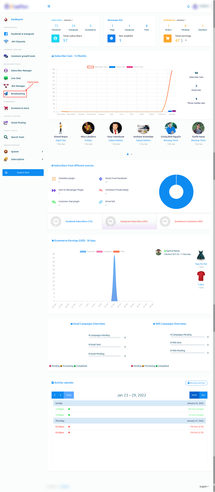And instantly, will appear a page that is divided into two sections – Messenger Broadcasting and SMS/email Broadcasting. And the SMS/email Broadcasting is divided into three parts — CONTACT, TEMPLATE, and BROADCAST CAMPAIGN.
To create a campaign for Messenger Broadcasting, click on the Messenger Broadcasting option.
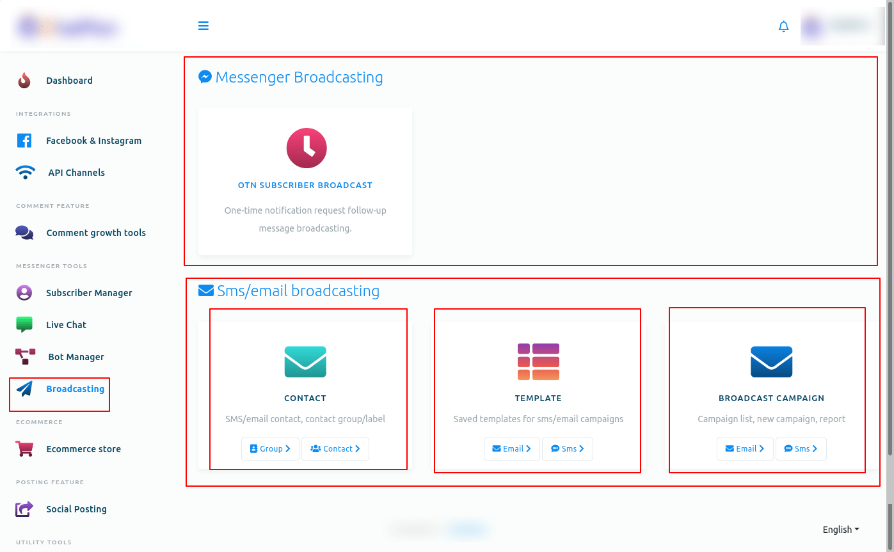And instantly, a page called OTN subscriber broadcast will appear with a button called create campaign. Now click on the create campaign button.

And instantly, a page called Add OTN subscriber broadcast will appear with an instruction at the top of the page and a form. The form is divided into three parts — Campaign details, Targeting options, Message template.
Please, read the instruction carefully before starting to create the campaign.
Now you have to fill out the form.
First, fill out the Campaign related fields.
Campaign Details
Give a name for the campaign in the campaign name field. After that, select a Facebook page from the select page field.
Then you have to select an OTN postback template from the OTN postback template field. Just click on the OTN postback template field and a drop-down menu of different OTN postback templates will appear. Now select an OTN postaback template from the drop-down menu. Of course, you can select multiple OTN postback templates from the drop-down menu.
Targeting options
Now come to the Targeting options related fields.
In the field called Target by labels, you can select labels from a drop-down menu of different labels. Of course, you can select multiple labels. The message will be sent to the subscribers who are on these labels. To know more, click on the tooltip button.
You can also select labels in the Exclude by label fields. Of course, you can select multiple labels in the field. The message will not be sent to the subscribers who are on these labels. Moreover, unsubscribe label will be excluded automatically. To know more, click on the tooltip button.
You can also select gender in the gender field. Click on the gender field and a drop-down menu of male and female will appear. From the drop-down menu, select male or female. If you select male, the message will be sent only to the male subscribers. On the other hand, if you select females, the message will be sent only to female subscribers.
In the time zone field, select a time zone. And the message will be sent to the subscribers who live in the selected time zone.
You can also select a locale in the locale field. Just click on the locale field, a drop-down menu of different locales will appear. Now select a locale from the drop-down menu. The message will be sent to the people who fall in the selected locale.
Message Template
Now come to the message templated related fields.
In the select message type field, you can select a message type. Click on the field and a drop-down menu of different message type will appear. From the drop-down menu, you have to select a message type.
Text message type
If you select text as a message type, you have to provide a text message in the message field. Also, you can include first name or last name of the subscribers.
Well, after that, you will see a sending time button. If you want to schedule the post, turn on the button. And instantly, two additional fields – Schedule time and time zone – will appear. Now click on the schedule time field and a calendar of date and time will appear. From the calendar, select a date and time. In the time zone field, select a time zone. Now click on the create campaign button and a successful message will appear. That is, the campaign has been created.

Image, Audio, Video and File message type
And if you select image, audio, video, or file as the message type, an upload button will appear. By clicking on the upload button, you have to upload image, audio, video or file for the respective message type.
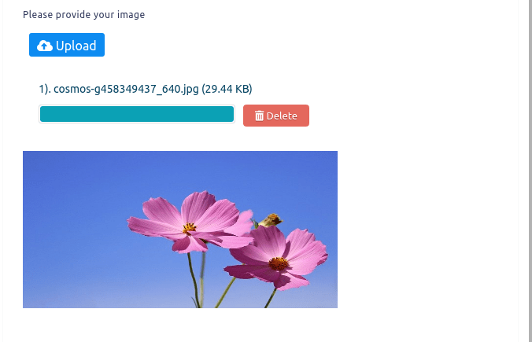

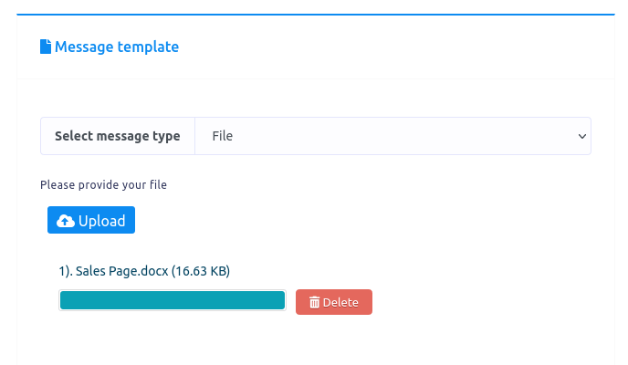
Quick Reply
On the other hand, if you select quick reply, some fields – message, button text, button type – will appear. Write a text message in the message field, write a text for button in the button text field. Select a button type in the button type field. Click on the button type field and drop-down menu of different button type – Post Back, User phone number, User email address – will appear. From the drop-down menu, select a button type.
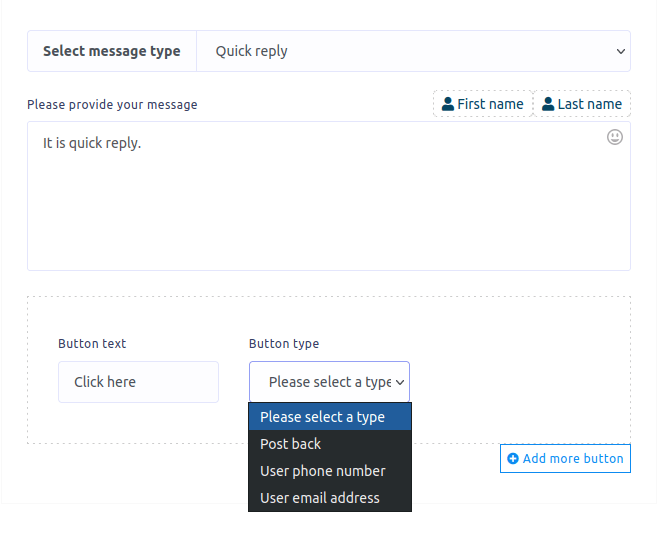Postback quick reply
If you select postback, another field called postback id will appear. In the postback id field, you have to select a pre-defined postback template. You can also create a postback id by clicking on the add button.
You can also add more button by clicking on the add more button.
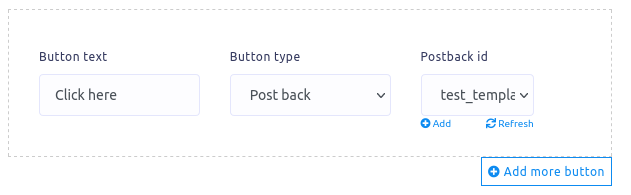User phone number quick reply
In the quick reply message type, you can select the user phone number as the button type. Just as you select the User phone number as the button type the Button text field will be disabled.
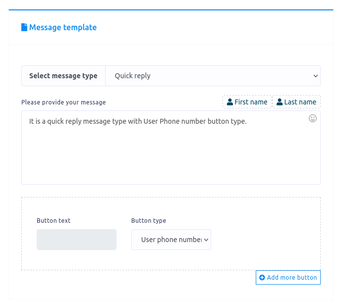User email address quick reply
In the quick reply message type, you can select the user email address as the button type. Just as you select the User email address as the button type the Button text field will be disabled.
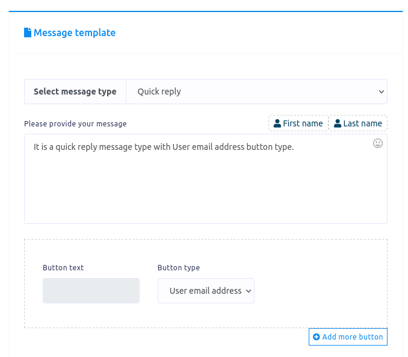Text with button message type
On the other hand, if you select the Text with buttons as a reply type, some fields — Message, Button text and Button type — will appear. Write a message in the message field, write a text for button in the Button text field and select a button type from the button type field.
Click on the button type field and a drop-down menu of different button type – postback, weburl, Webview(full), Webview(tall), Webview(compact), User’s birthday, Call us, Unsubscribe – will appear.
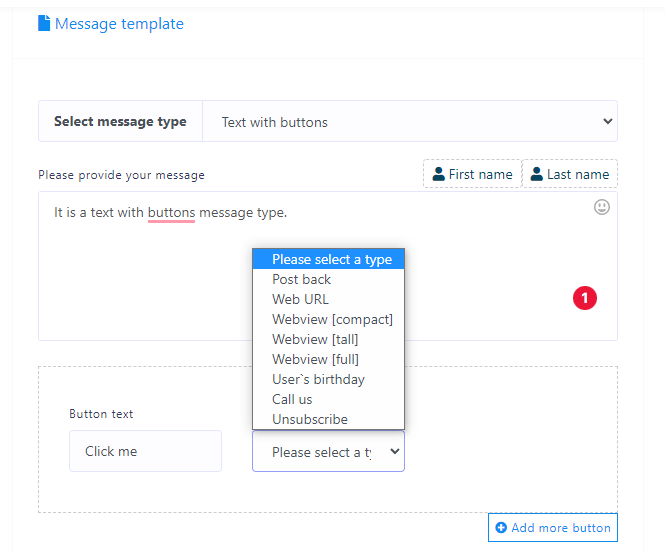Postback text with buttons
If you select postback, a new field called postback id will appear. In the postback id field, you have to select a predefined postback template. Also, you can create a postback template by clicking on the add button under the postback id field.
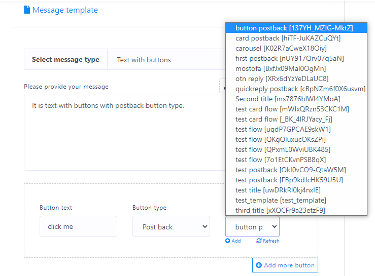Web url text with buttons
On the other hand, if you select Weburl, Webview(full), Webview(tall) or webview(compact), a new field called Web url will appear. In the Web url field, you have to paste a web url. When a user clicks on the button, the user will be redirected to the Web url.
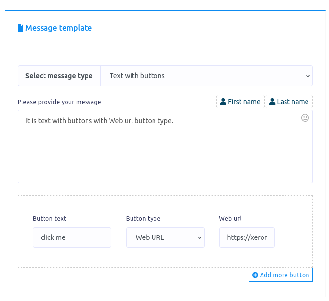User’s birthday text with buttons
You can also select User’s birthday button type from the drop-down menu of Button type field.

Call us text with buttons
You can also select Call us button type from the drop-down menu of different button type. Just as you select the Call use button, a field called phone number will appear. And you have to provide a phone number in the phone number field. Just user click on the call us button, a call to the phone number will make automatically.
 Unsubscribe text with buttons
Unsubscribe text with buttons
Unsubscribe text with buttons
You can also select Unsubscribe button type from the drop-down menu of different button type. When a user clicks on the Unsubscribe button in the messenger, the user will be unsubscribed.
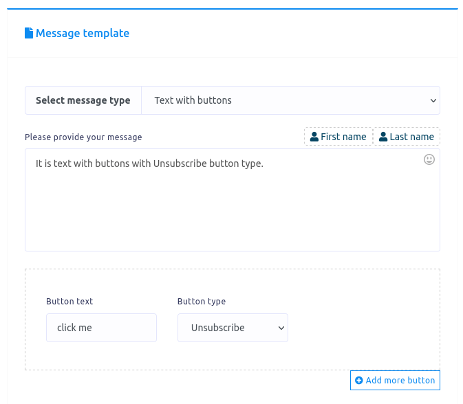Generic template message type
Well, you can also select Generic template as a message type. Just as you select the Generic template, an upload button and some additional fields will appear.
First, upload an image by clicking on the upload button. Then paste a link in the image click destination link field. When a user click on the image, the user will be redirected to the link.
After that, you have to provide a title and a subtitle in the title and subtitle field. In the button text field, write a text for the button. Then you have to select a button type from the drop-down menu of the different button type. You already know about the different types of buttons.

Carousel
If you select carousel as the message type, the same fields as the generic template will appear. Now you have to fill out the fields. Below the fields, you will see add more button and add more template button. If you want to add more buttons click on the button Called Add more button. And if you want to add more templates, click on the button called Add more template button.
To make a carousel, you need at least two templates.
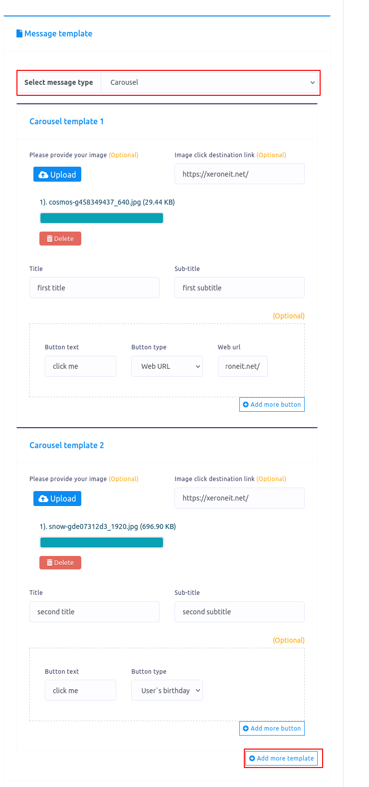Media
If you select Media as the message type, some fields – media url, button text and button type – will appear. Now you have to fill-out these fields. Click on the tooltip to see how to get the media url.
You can add more buttons by clicking on the button called Add more button.
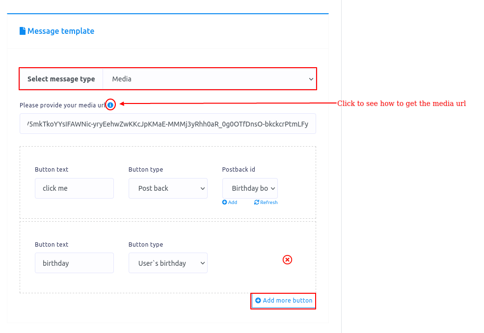SMS/Email broadcasting
To create SMS/Email broadcasting, first, you have to create contact. To create contact, first, you need to create a group.
Create group
To create a group, click on the button called the group in the Contact option of SMS/email broadcasting section.
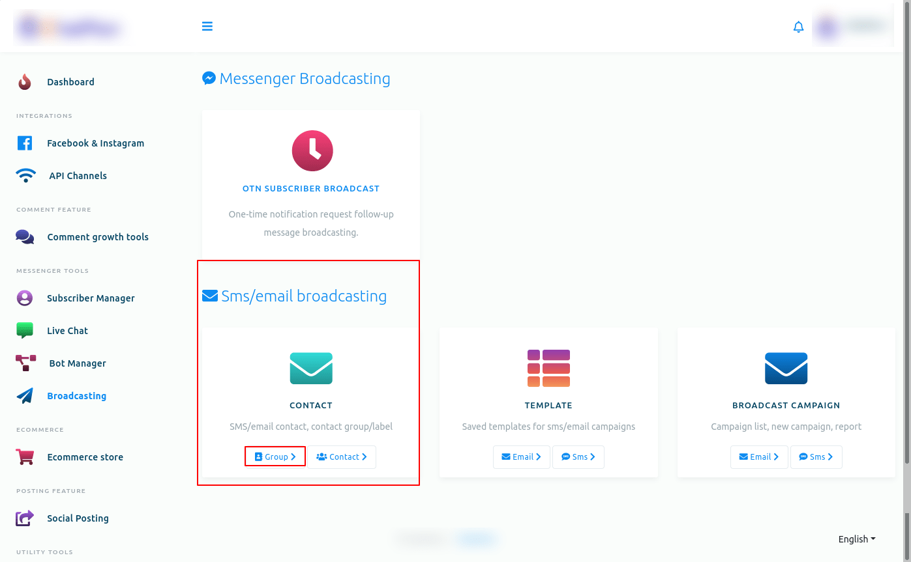And instantly, a new page called contact group with New group button will appear. Now click on the New group button.

Instantly, a modal with a field called group name will appear. Write a name in the field for the group and click the save button. And a successful message will appear. Now click on the close button to close the modal form.
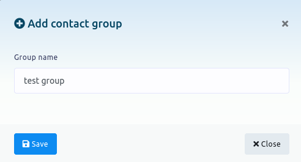Now the group will appear in the list of the group. You can also edit and delete the group by clicking on the edit and delete icon.
Create Contact
Now get back to the interface of the broadcasting and click on the contact button in the CONTACT option.
Instantly, a page called Contact Book will appear with a New contact button The predefined contacts will be present on the page. You can edit and delete the predefined contacts by clicking on the edit and delete button. Also, you can see the details of the contact by clicking on the view details(eye icon) button.
Click on the New contact button.
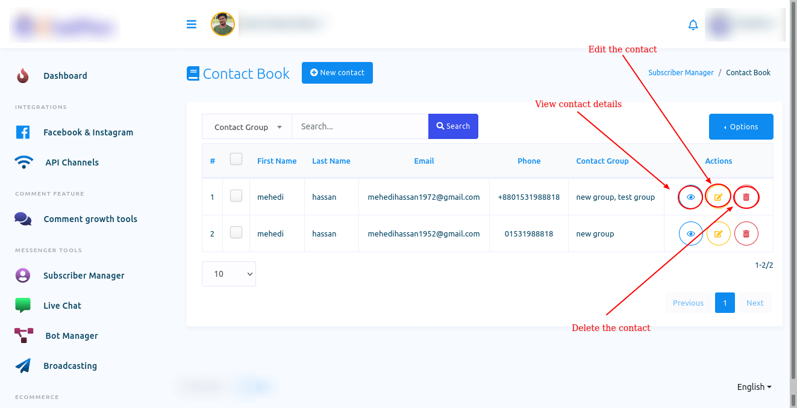Instantly, a modal form with some fields will appear. Fill-out the form and click on the Save button. And a successful message will appear. And the contacts you create will appear in the list on the Contact Book page.
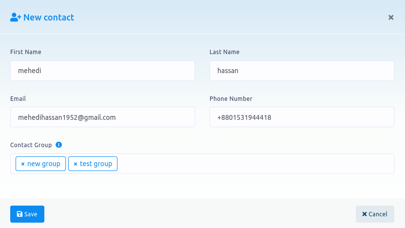From the list, you can edit and delete the predefined contacts by clicking on the edit and delete button.
Also, you can see the details of the contact by clicking on the view details(eye icon) button. Just as you click on the eye icon, a modal will appear with contact details.
On the modal, you can assign sequence to the contact. Also, you can write a note for a contact. Of course, you can see the contact details on the modal form.

Import, export and delete contacts
Also, you can import and export contacts easily. Of course, you can delete selected contacts.
Click on the options button of the Contact book page, and instantly, a drop-down menu of three buttons — import, export, and delete — will appear.
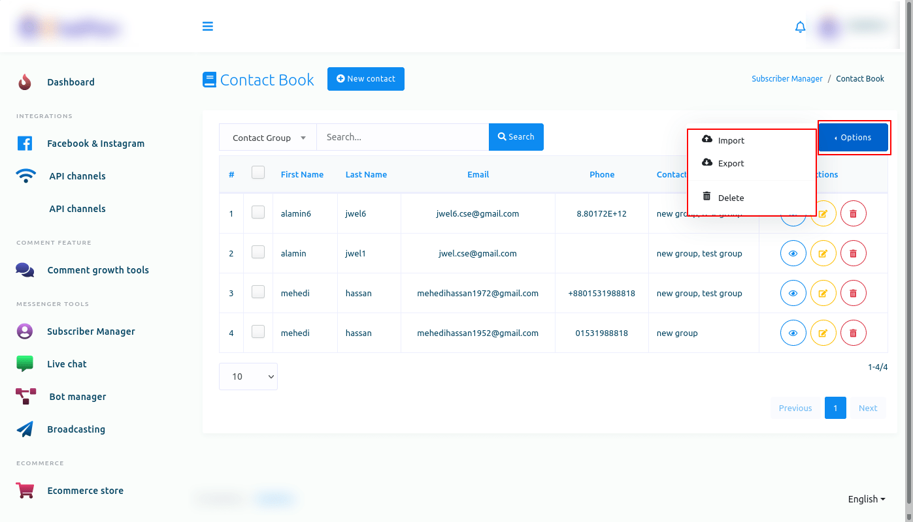Import contacts
To import contacts, click on the import button.
Instantly, a modal form called import contact(CSV) will appear. First, download the sample CSV file to see how to organize the CSV file.
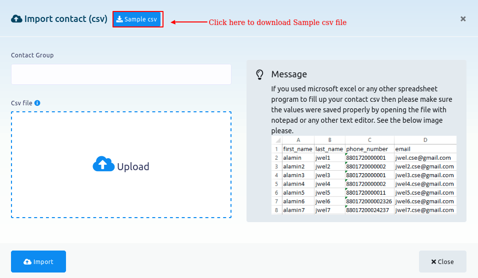The sample CSV file
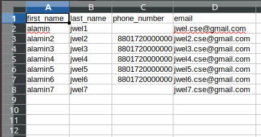Select contact groups in the Contact group field of the modal form. Click on the Contact group field and a drop-down menu of different contact groups will appear. From the drop-down menu, select contact group. Of course, you can select multiple contact groups.
Then you have to upload a CSV file of contacts you want to import. Upload a CSV file by clicking on the upload button. Then click on the import button of the modal form.
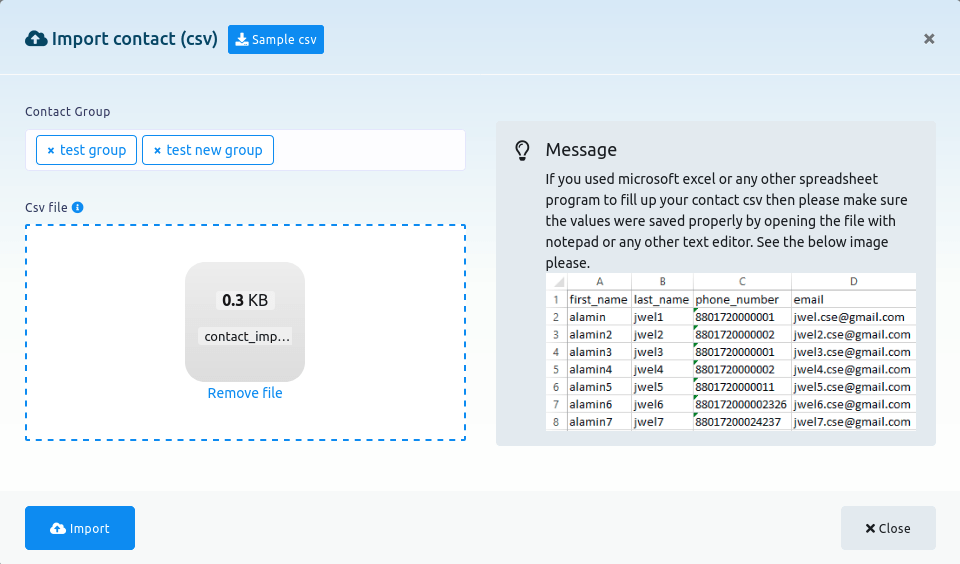Instantly, a successful message will appear. Then click on the cross button and the modal form will disappear.
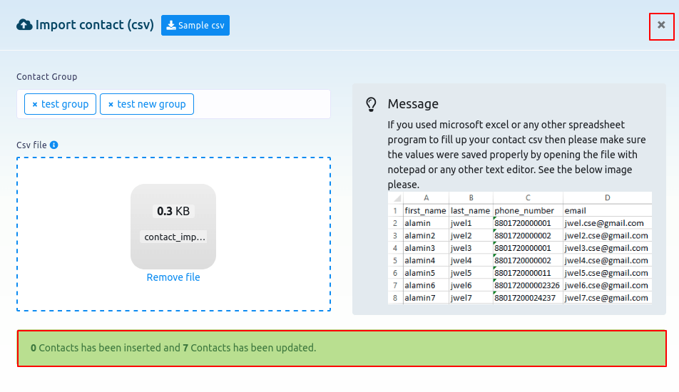And you will see that the contacts have been added to the contact list.
Export contacts
To export contacts, first, you have to select the contacts you want to export.
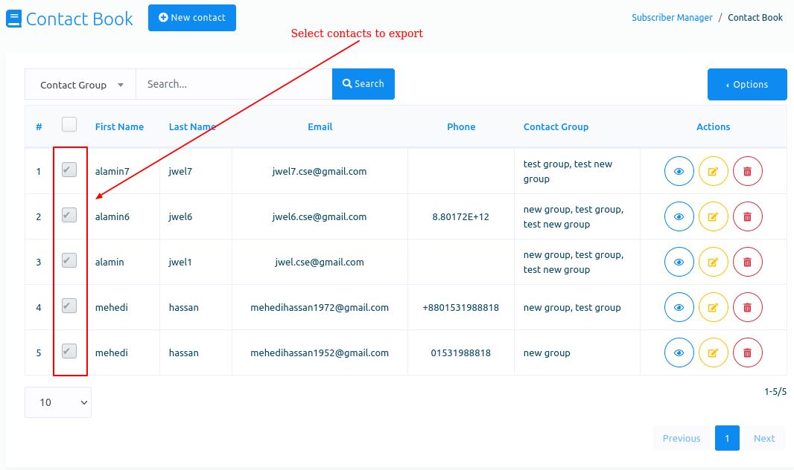After that, click on the export button of the drop-down menu of the Option button. And a CSV file of the selected contacts will be downloaded.
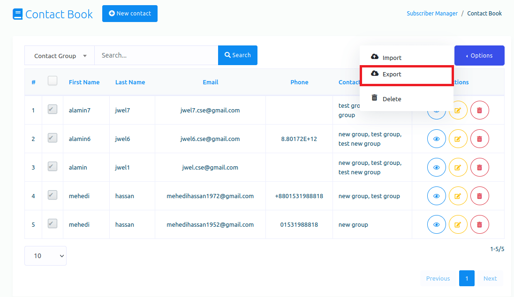Delete contacts
To delete contacts, first, you have to select the contacts you want to delete.
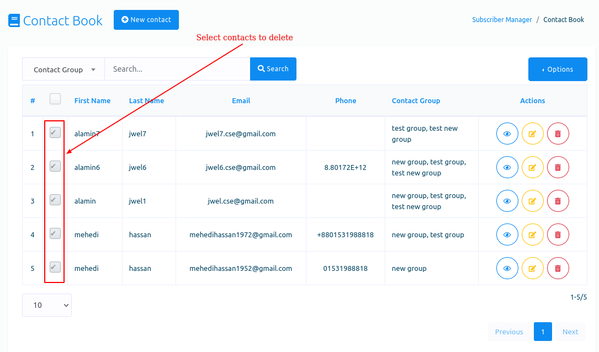Then click on the delete button of the drop-down menu of the option button.
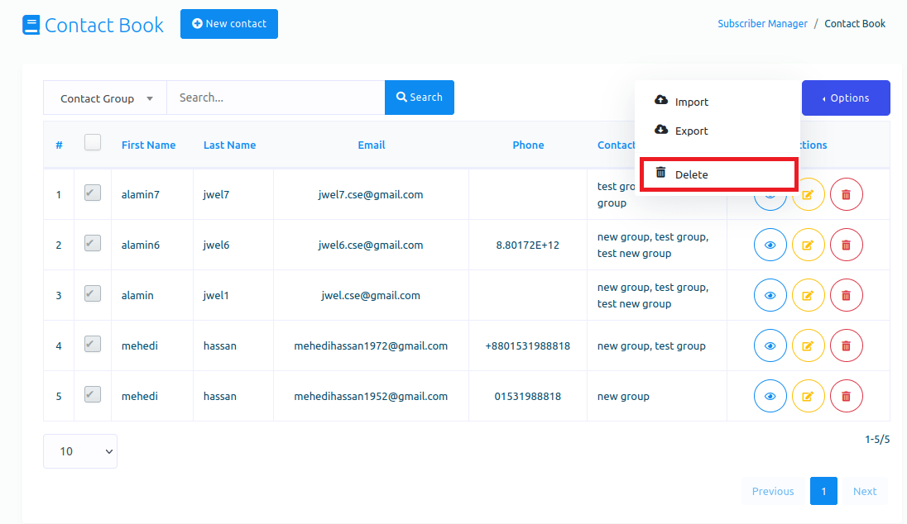Instantly, a modal form will appear with the ok and cancel button. To delete the contacts, click on the ok button and the selected contacts will be deleted.
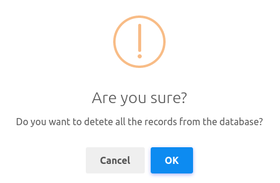Template
Email Template
Now get back to the interface of the broadcasting. On the template option, click on the Email button to create an email template.
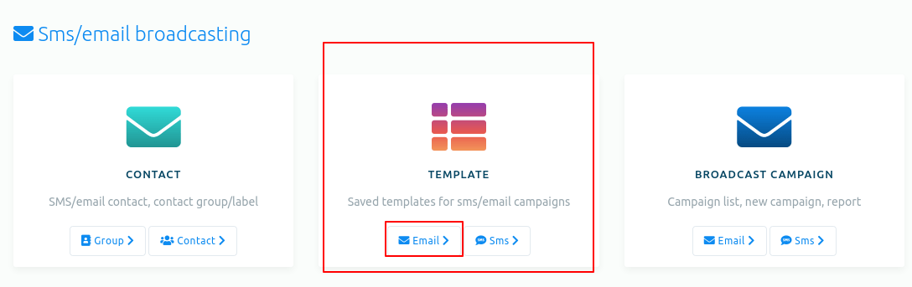Instantly, a page called email template will appear with a button called new template. Now click on the new template button and a drop-down menu of two options – Rich Text Editor and drag and drop – will appear. Click on the Rich text editor.
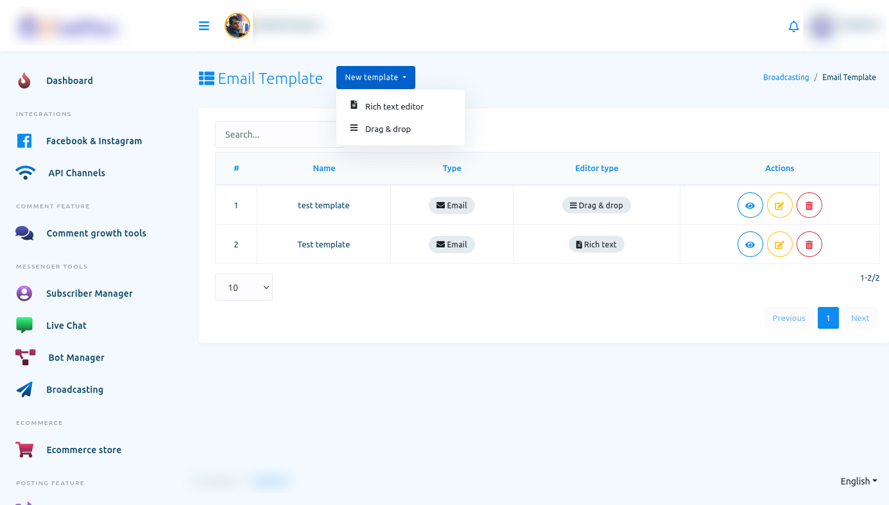Instantly a modal form called create template will appear with some fields – Template name, subject, content. Now you have to give a template name, write a subject in the subject field and write the content of the mail in the content field. Now click on the save button to save the template.

Now the template will appear in a list of saved templates. Of course, you can edit and delete the template. Of course, you can view the template by clicking on the view template button.
Create template by drag and drop
On the other hand, if you want to create a template by drag and drop, click on the drag and drop option of the drop-down menu.
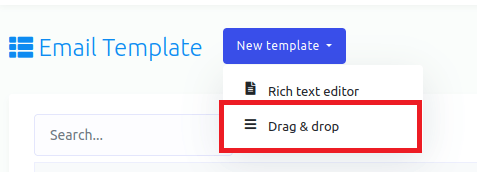Instantly, a page with four options – no sidebar, left sidebar, Right sidebar, both sidebar – will appear.
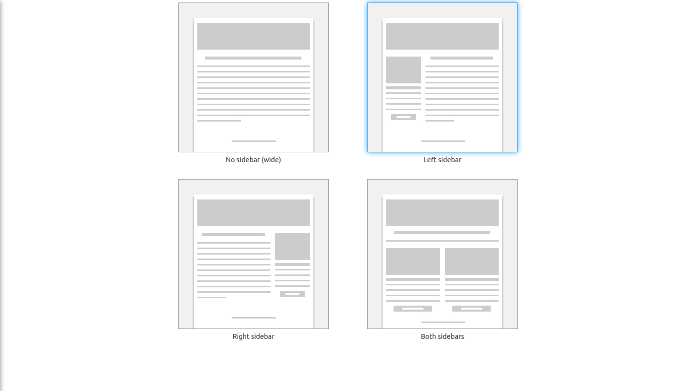With the four types of options, you can create four types of template. Click on any option and an editor will appear. On the right side of the editor, you will see a sidebar with some elements – Text, image, link, and divider. Now you have to drag the element and drop it on the editor.
Now drag the text element and drop it on the editor. Now double-click on the text element and a field will appear. And on the field, you have to write your text. Then click on the tick to save the text. Likewise, by clicking on the cross button, you can delete the text and the element.
Now drag the image element from the sidebar and drop it on the editor. Now double-click on the image element to upload an image. After you have uploaded an image, the image will appear on the image element.
Likewise, drag an link element where you have to provide an URL. Click on the element and a modal form will appear. In the first field of the modal, you have to provide an url. Then you have to write the title of the link. You can also change the color and background color of the bar of the link. You can also change the size and the position of the preview.
Also, you can drag and drop the divider element. The divider element will divide the element. Well, you can change the color of the divider.
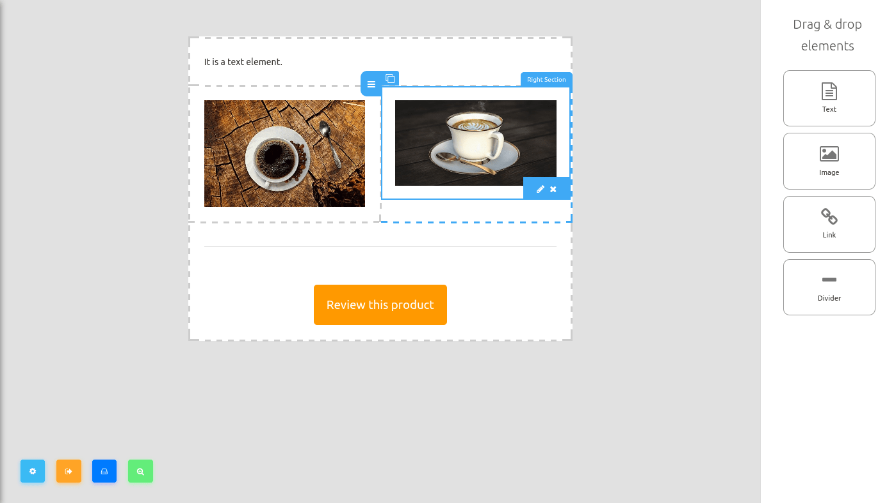At the left bottom side of the editor, you will see some buttons – Layout options, save and quit, save template, save template and preview button.
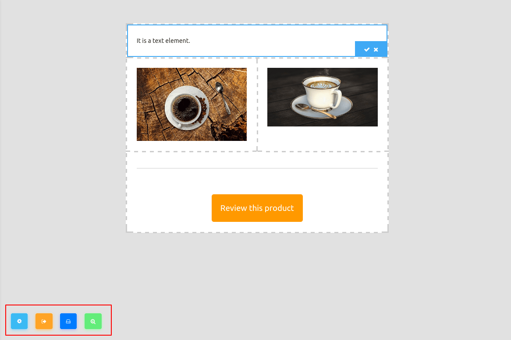Now click on the Layout options and a left sidebar will appear. From the sidebar, you can change the layout of the template.
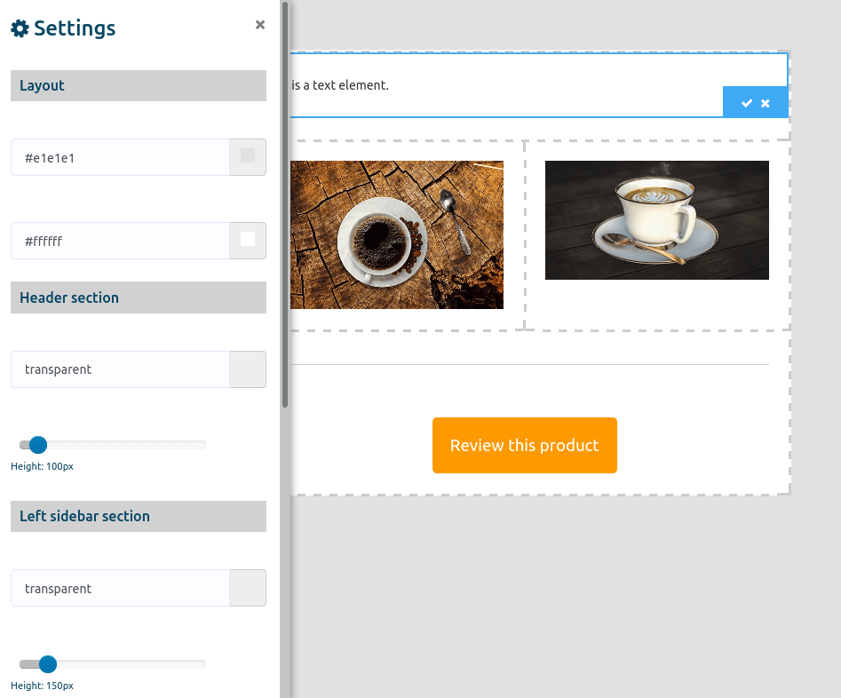SMS template
To create a template for SMS, click on the SMS option in the template.
an image will be here
And instantly, a page called SMS template with a button called New template will appear. Click on the New template button.
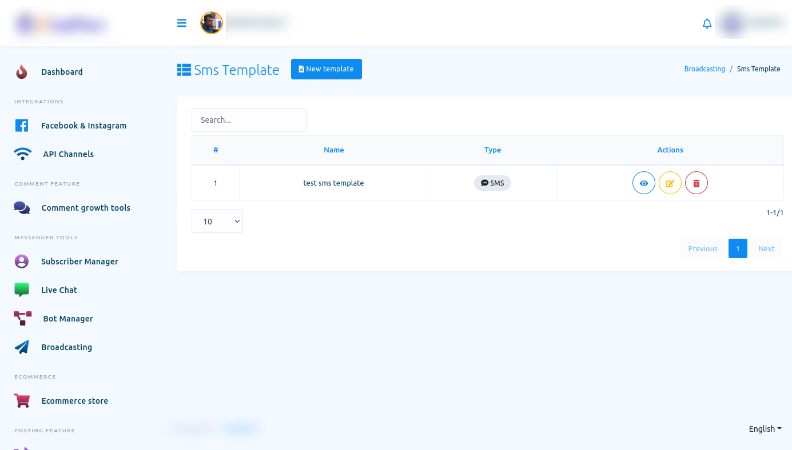And Instantly, a modal called create template will appear.
You have to provide a template name in the template name field. Then you have to write content in the content field. You can also include the first name or the last name in the content.
Then click on the save button to save the template.
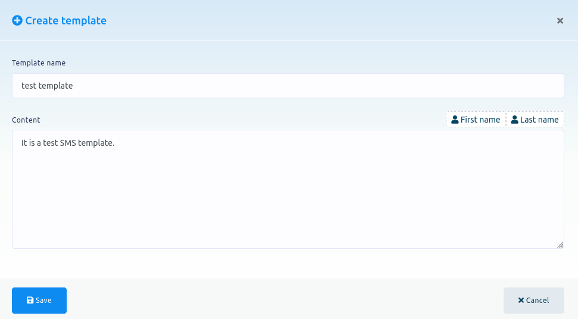